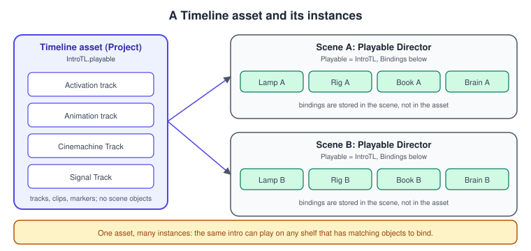
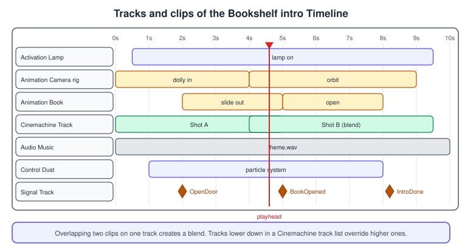
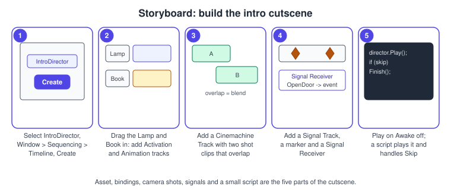

Timeline and Cutscenes
|
This content was generated with the assistance of AI and should be verified against the official documentation before being relied on in production. |
A cutscene is a sequence of things that happen at known times: a camera dollies in, a lamp turns on, a door opens, music starts, a line of text appears. You can build that with coroutines and Animator triggers, and for two or three steps that is fine. When the sequence has a dozen parts that artists want to retime, preview in the editor and blend, Timeline is the better tool: a visual editor in which tracks hold clips along a time ruler, played by a Playable Director component.
The facts were checked in November 2026. The documented version is Unity 6.3 LTS (6000.3) with the Timeline 1.8 package (1.8.13) and Cinemachine 3.1; from Unity 6.6 Timeline is a core package. Timeline runs on every platform Unity builds for, with no platform-specific parts. In the Bookshelf, a 10-second intro lights the desk lamp, dollies the camera towards the shelf, slides a book out, plays music and dust, and hands control to the player. It is built with the same objects as in Animation and Mecanim and Cameras and Cinemachine; the shared model is bookshelf.glb. Timeline is built on the Playables system that the Animation page introduces.
Assets, instances and bindings
Timeline separates what happens from what it happens to:
-
A Timeline asset (a
.playablefile in the Project) stores the tracks, the clips and their timing, and any animation recorded into it. It holds no references to objects in a scene. -
A Timeline instance is a Timeline asset plus a Playable Director component on a scene GameObject. The director stores the bindings: which scene object each track drives.
Because they are separate, one asset can serve many instances: the same intro played on two shelves, or a VictoryTL sequence reused for different characters, only needs different bindings.

The Playable Director
| Property | Meaning |
|---|---|
Playable |
The Timeline asset to play. Setting it makes the Timeline instance. |
Update Method |
The clock: DSP (the audio clock, sample-accurate audio), Game Time (affected by |
Play On Awake |
Plays when the scene starts. Turn it off for cutscenes that a script starts. |
Wrap Mode |
Hold stops on the last frame and holds it, Loop repeats, None plays once and then lets go. |
Initial Time |
Where playback starts, in seconds. |
Bindings |
The list of tracks of the asset and the scene object each one drives. |
The Timeline window
Open it with Window > Sequencing > Timeline. The left side lists tracks, the right side shows clips against a ruler in seconds or frames. Each track has a header with mute, lock and a More (three dots) menu; tracks can be grouped and reordered, and groups collapse. To start, select a GameObject, open the window and select Create: Unity asks where to save the Timeline asset, saves it and adds the Playable Director to the object.

Track types
| Track | What it does |
|---|---|
Activation |
Enables the bound GameObject while a clip is playing and disables it outside the clips. The track’s Post-playback state (Active, Inactive, Revert or Leave As Is) sets what happens when the Timeline ends. |
Animation |
Plays animation clips on the bound GameObject (through its Animator) or records new keys directly in the Timeline (an Infinite clip). Clips can blend where they overlap, have ease in and out, and be matched to the position of the previous clip. An Override Animation track plus an Avatar Mask replaces only part of the body. |
Audio |
Plays audio clips through an Audio Source, with blending of volume where clips overlap. |
Control |
Controls other things in time: a Particle System (play and stop at the clip’s times), a prefab instance (instantiated while the clip plays), a nested Timeline (a Sub-Timeline), or any script implementing |
Signal |
Holds markers (Signal Emitters and your own) that fire events at a time, instead of clips that last for a duration. |
Playable |
Holds clips of custom |
Cinemachine |
Added by the Cinemachine package: Cinemachine Shot Clips that choose which CinemachineCamera is live. |
Clips that overlap on one track create a blend; the overlap length is the blend duration, and the blend curves can be edited. Control clips do not blend. Extrapolation decides what an Animation track does before and after its clips: hold the last pose, loop, or revert.
Build the intro sequence
The procedure below builds the Bookshelf’s intro. It assumes the Bookshelf scene with a Lamp, a CameraRig, a Book with a Book_PullOut clip (see Animation and Mecanim) and a Cinemachine setup with two CinemachineCamera objects, ShotWide and ShotClose.
-
Create an empty GameObject named
IntroDirector. Open Window > Sequencing > Timeline, selectIntroDirectorand select Create. SaveIntroTL. Unity adds a Playable Director with the Playable set to the new asset. Lock the Timeline window (padlock) so it keeps showing this instance while you click other objects. -
Drag
Lampfrom the Hierarchy onto the Timeline window and choose Activation Track. Drag the clip to start at 0.5 s and end at 9.5 s. Set the track’s Post-playback state to Active so the lamp stays lit afterwards. -
Drag
CameraRigonto the window and choose Animation Track. Select Record, move the playhead to 0 s and 4 s and move the rig, or drag animation clips onto the track. Overlap two clips to blend a dolly into an orbit. -
Drag the main camera (with the Cinemachine Brain) onto the window and choose Create Cinemachine Track. Drag
ShotWideand thenShotCloseonto the track to make Cinemachine Shot Clips. Make the clips touch to cut, or overlap them to blend. -
Drag
Bookonto the window and choose Animation Track; add theBook_PullOutclip at 2 s. -
Drag the dust Particle System onto the window and choose Control Track; the clip plays the system for its length.
-
Drag an audio clip onto the window; Unity creates an Audio Track, which you bind to an Audio Source.
-
Open the More menu of a track header and choose Add Signal Emitter at 2 s, 5 s and 8.2 s (see signals below).
-
Turn Play On Awake off on the Playable Director if a script starts the sequence.

Record and edit animation
Select an Animation track’s Record button, choose a track and move the playhead: keys are written into an Infinite clip that belongs to the Timeline asset, which you can convert to a regular Animation clip. For humanoids, a second clip can be matched to the end pose of the first so feet and hips line up.
Cinemachine and Timeline
A Cinemachine Track drives the Cinemachine Brain: each Cinemachine Shot Clip names a CinemachineCamera to make live for the clip’s duration, and Timeline overrides the Brain’s priority-based choice while the Timeline plays; control returns to the Brain when it ends. Clips next to each other cut; clips that overlap blend. Ease In Duration and Ease Out Duration in the clip’s inspector blend with other Cinemachine tracks and with the camera that the Brain considers live. Several Cinemachine tracks can exist in one Timeline, and tracks lower in the list override tracks above. For a simple shot sequence that never needs retiming, a Cinemachine Sequencer Camera can replace Timeline.
Signals and markers
Clips last for a duration; some things just happen at an instant: open a door, start the lap timer, enable the player. Markers are points on a track or on the Timeline ruler; a Signal Emitter is the built-in marker. The pieces:
-
A Signal Asset (
.signal) names the signal. It is reusable and has no logic. -
A Signal Emitter on a track (the track header’s More menu, Add Signal Emitter) refers to a Signal Asset and fires it when the playhead passes.
-
A Signal Receiver component on the GameObject bound to that track lists reactions: for each Signal Asset, a
UnityEventthat calls any public method.
To set it up, select the emitter in the Timeline window and use Create Signal (or choose an existing asset) in the Inspector, select Add Signal Receiver to put the component on the bound object, then use Add Reaction on the receiver and wire the UnityEvent to a method. A marker drawn with a warning icon has no Signal Asset yet.
Signal Emitters are one kind of notification. You can write your own marker with a payload, which also lets you read it from a script instead of wiring UnityEvents in the Inspector. A marker that implements INotification is delivered to any INotificationReceiver on the GameObject bound to the track that holds it (for a marker on the Timeline ruler, on the GameObject with the Playable Director):
using UnityEngine;
using UnityEngine.Playables;
using UnityEngine.Timeline;
/// <summary>
/// A marker that carries the title of a book. The file must be called BookMarker.cs because
/// markers are ScriptableObjects. Add it from a track's More menu, like a Signal Emitter.
/// </summary>
public class BookMarker : Marker, INotification
{
public string bookTitle = "Untitled";
// Receivers can tell notifications apart with this identifier.
public PropertyName id => new PropertyName("BookMarker");
}using UnityEngine;
using UnityEngine.Playables;
/// <summary>Put this on the GameObject that the Signal track is bound to.</summary>
public class BookMarkerReceiver : MonoBehaviour, INotificationReceiver
{
[SerializeField] private BookAnimator bookAnimator;
public void OnNotify(Playable origin, INotification notification, object context)
{
if (notification is not BookMarker marker) return;
Debug.Log($"Intro marker: {marker.bookTitle}");
bookAnimator.PullOut();
}
}If you jump the playhead past a marker, for example when skipping a cutscene, the marker’s notification is not guaranteed to fire. Put end-of-sequence effects on tracks (an Activation track’s post-playback state) or in the handler that runs when the director stops, not in markers.
Scripting playback
The PlayableDirector class starts, stops and inspects a Timeline instance: Play, Pause, Resume, Stop, time, duration, state, extrapolationMode, playableAsset, the played, paused and stopped events, and Evaluate (apply the sequence at the current time without playing). The script below starts the intro, hides gameplay while it runs, lets the player skip it with an Input System action
(see Input System) and tells the game when it ends:
using System;
using UnityEngine;
using UnityEngine.InputSystem;
using UnityEngine.Playables;
/// <summary>
/// Plays the Bookshelf intro Timeline, lets the player skip it, and reports when it is over.
/// The director must have Play On Awake switched off.
/// </summary>
[RequireComponent(typeof(PlayableDirector))]
public class IntroCutscene : MonoBehaviour
{
[SerializeField] private InputActionProperty skip;
[SerializeField] private GameObject gameplayRoot;
public event Action Finished;
private PlayableDirector _director;
private bool _finished;
private void Awake()
{
_director = GetComponent<PlayableDirector>();
_director.playOnAwake = false;
}
private void OnEnable()
{
_director.stopped += OnStopped;
skip.action.performed += OnSkip;
skip.action.Enable();
}
private void OnDisable()
{
_director.stopped -= OnStopped;
skip.action.performed -= OnSkip;
skip.action.Disable();
}
public void Play()
{
_finished = false;
gameplayRoot.SetActive(false);
_director.time = 0;
_director.Play();
}
private void OnSkip(InputAction.CallbackContext context)
{
if (_finished || _director.state != PlayState.Playing) return;
// Apply the final frame of the sequence (tracks with a post-playback state
// take effect), then stop. Markers in the skipped part do not fire.
_director.time = _director.duration;
_director.Evaluate();
_director.Stop();
}
private void OnStopped(PlayableDirector director)
{
if (_finished) return;
_finished = true;
gameplayRoot.SetActive(true);
Finished?.Invoke();
}
}Binding objects at runtime
Bindings are stored in the scene, so a Timeline instance created from code (or a prefab that is spawned) must be bound by script. Each track of the asset appears in TimelineAsset.outputs; give the director the object for each one with SetGenericBinding.
using UnityEngine;
using UnityEngine.Playables;
using UnityEngine.Timeline;
/// <summary>Binds the tracks of a Timeline to scene objects by track name.</summary>
public static class TimelineBinder
{
public static bool Bind(PlayableDirector director, string trackName, Object target)
{
if (director.playableAsset is not TimelineAsset timeline)
{
return false;
}
foreach (PlayableBinding binding in timeline.outputs)
{
if (binding.streamName == trackName)
{
director.SetGenericBinding(binding.sourceObject, target);
return true;
}
}
Debug.LogWarning($"Timeline '{timeline.name}' has no track called '{trackName}'.");
return false;
}
}Use it as TimelineBinder.Bind(director, "Lamp", lampGameObject) after assigning director.playableAsset. An Animation track is bound to an Animator (or a GameObject that has one), an Audio track to an AudioSource, an Activation track to a GameObject; a Cinemachine Track to the camera that has the Cinemachine Brain.
A custom track
When the built-in tracks do not animate the property you need, write a custom track. The pieces are a track (TrackAsset) that declares what it can be bound to and which clips it accepts, a clip (PlayableAsset) that creates the data for a time range, and a mixer behaviour that combines the clips that are active at each frame and writes the result to the bound object. This track blends the intensity of the desk lamp’s Light between clips; save each part in its own file.
// LampIntensityBehaviour.cs: the data of one clip.
using System;
using UnityEngine.Playables;
[Serializable]
public class LampIntensityBehaviour : PlayableBehaviour
{
public float intensity = 1f;
}// LampIntensityClip.cs: appears in the Timeline window as a clip.
using UnityEngine;
using UnityEngine.Playables;
using UnityEngine.Timeline;
public class LampIntensityClip : PlayableAsset, ITimelineClipAsset
{
[SerializeField] private LampIntensityBehaviour template = new LampIntensityBehaviour();
// The clip can blend with its neighbours.
public ClipCaps clipCaps => ClipCaps.Blending;
public override Playable CreatePlayable(PlayableGraph graph, GameObject owner)
{
return ScriptPlayable<LampIntensityBehaviour>.Create(graph, template);
}
}// LampIntensityMixer.cs: runs every frame and blends the active clips.
using UnityEngine;
using UnityEngine.Playables;
public class LampIntensityMixer : PlayableBehaviour
{
private Light _light;
private float _defaultIntensity;
private bool _hasDefault;
public override void ProcessFrame(Playable playable, FrameData info, object playerData)
{
var light = playerData as Light;
if (light == null) return;
if (!_hasDefault)
{
_light = light;
_defaultIntensity = light.intensity;
_hasDefault = true;
}
float blended = 0f;
float totalWeight = 0f;
int count = playable.GetInputCount();
for (int i = 0; i < count; i++)
{
float weight = playable.GetInputWeight(i);
var input = (ScriptPlayable<LampIntensityBehaviour>)playable.GetInput(i);
blended += input.GetBehaviour().intensity * weight;
totalWeight += weight;
}
// Between clips the lamp returns to the intensity it had before the Timeline.
light.intensity = blended + _defaultIntensity * (1f - Mathf.Clamp01(totalWeight));
}
public override void OnPlayableDestroy(Playable playable)
{
if (_hasDefault && _light != null)
{
_light.intensity = _defaultIntensity;
}
}
}// LampIntensityTrack.cs: the track itself. Bound to a Light, accepts LampIntensityClip.
using UnityEngine;
using UnityEngine.Playables;
using UnityEngine.Timeline;
[TrackColor(0.9f, 0.7f, 0.1f)]
[TrackClipType(typeof(LampIntensityClip))]
[TrackBindingType(typeof(Light))]
public class LampIntensityTrack : TrackAsset
{
public override Playable CreateTrackMixer(PlayableGraph graph, GameObject go, int inputCount)
{
return ScriptPlayable<LampIntensityMixer>.Create(graph, inputCount);
}
}Source: Timeline package API: TrackAsset
After the scripts compile, right-click in the Timeline window and the Lamp Intensity Track appears in the track list; bind it to the lamp’s Light, add clips and set each clip’s intensity in the Inspector. Overlap two clips to cross-fade the intensity.
Common mistakes
-
Bindings are missing at runtime. The asset has no scene references. After spawning an object or loading a scene, bind tracks in code or keep the director in the same scene as its targets.
-
The cutscene plays at the start of the scene. Play On Awake is on by default.
-
A skipped cutscene leaves the world half-set. Markers in the skipped part do not run; move required state changes to tracks or to the
stoppedhandler. -
The Timeline window shows nothing. It follows the selection; select the object with the Playable Director, or lock the window.
-
Animated objects snap back. The Animation track’s Post-playback behaviour and extrapolation decide the pose after the clip; the Activation track has its own post-playback state.
-
Time stops with
Time.timeScaleset to zero. Use the Unscaled Game Time update method for sequences that must run during a pause. -
Blends between clips look wrong. Only overlapping clips on the same track blend; clips that merely touch cut.
-
An Animator and an Animation track fight. The track overrides the properties it animates while it plays; use Animation Override tracks and masks to split the work (see the Avatar Mask section in Animation and Mecanim).
Performance notes
-
Starting a director builds its Playable graph, so for a long sequence start it during a loading screen or a quiet moment, not on the frame of a button press.
-
Long sequences with many animation tracks evaluate every Animator they bind each frame; disable the characters of a cutscene that are not on screen.
-
Sub-Timelines and Control clips that instantiate prefabs allocate when they start; use Activation tracks on pre-placed objects for effects that repeat.
-
Audio clips on the Audio track stream like any other Audio Source clip, so keep the compression settings from Audio in mind for music.
-
Profile with the Profiler’s Playables and Animation rows (Profiling and Optimization).
What changed recently
| Version | Change |
|---|---|
Unity 6.0 |
Cinemachine 3 (CinemachineCamera and Cinemachine Brain) is the camera package; the Cinemachine Track chooses which CinemachineCamera is live. |
Unity 6.3 LTS |
Timeline 1.8 and Cinemachine 3.1 ship with the Editor as verified packages. |
Unity 6.5 |
The Animation window, where Timeline’s recorded clips are edited, was redesigned. |
Unity 6.6 |
Timeline becomes a core package, installed with the Editor and versioned with it. |
See also
-
General concepts: Game Loop and Frame Timing (fixed and variable time, which clock a sequence follows) and Scene Graphs and Asset Formats.
-
Unity: Animation and Mecanim, Cameras and Cinemachine, Audio, Particles and VFX Graph, Prefabs and Scenes and C# Scripting and the MonoBehaviour Lifecycle.